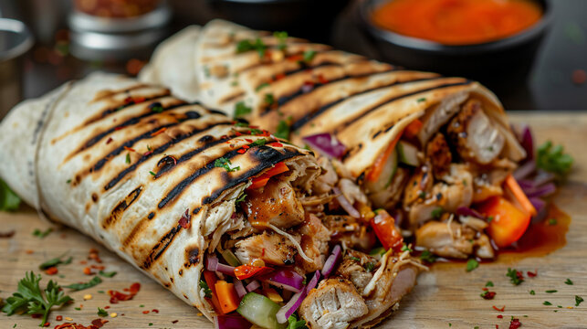

Home
Sharwama Recipe

Description
Shawarma is a popular Middle Eastern street food made from thinly sliced cuts of meat, such as chicken, beef, lamb, or turkey, stacked in a cone shape and roasted on a slow-turning vertical rotisserie.
As the meat cooks, the outer layer is shaved off in thin strips and typically served wrapped in pita or lavash bread.
The dish is a descendant of the Ottoman doner kebab and has become a culinary staple across the Levant, Turkey, and beyond.
The meat is marinated for hours in a blend of spices like cumin, cardamom, cinnamon, and turmeric, often mixed with yogurt or lemon juice to tenderize it.
It is traditionally garnished with fresh vegetables like tomatoes, cucumbers, and onions, and drizzled with sauces such as tahini, toum (garlic sauce), or tzatziki.
Shawarma is renowned for its rich, savory flavor and is commonly enjoyed as a quick, hearty meal at any time of day.
Ingredients
- Meat & Marinade: 1.5 – 2 lbs chicken thighs or beef/lamb (thinly sliced), ½ cup plain yogurt (or Greek yogurt), 3 tbsp lemon juice, 3 tbsp olive oil, 4 cloves garlic (minced)
- Spices: 1 tsp cumin, 1 tsp coriander, 1 tsp paprika, ½ tsp turmeric, ½ tsp cinnamon, ¼ tsp cloves, ¼ tsp nutmeg, ½ tsp black pepper, 1 tsp salt
- Assembly: 6 pita breads or lavash, 1 cup shredded lettuce or cabbage, 1 tomato (diced), 1 cucumber (sliced), ¼ red onion (thinly sliced), pickles, fresh parsley
- Sauce: ½ cup tahini (or garlic toum/tzatziki), 2 tbsp lemon juice, 1 clove garlic (minced), salt, water (to thin)
Steps
- Marinate: Mix yogurt, lemon juice, olive oil, garlic, and all spices in a large bowl. Add meat strips, toss to coat, cover, and refrigerate for at least 2 hours (preferably overnight).
- Make Sauce: Whisk together tahini, lemon juice, garlic, and salt; add water gradually until it reaches a drizzling consistency. Set aside.
- Cook Meat: Heat a large skillet or grill pan over medium-high heat. Cook meat in batches for 3 – 4 minutes per side until browned and cooked through. (Alternatively, bake at 425°F/220°C for 20 – 25 minutes).
- Prep Veggies: Chop lettuce, tomatoes, cucumbers, and onions while the meat cooks.
- Assemble: Warm pita bread slightly. Spread a layer of sauce on each bread, then add meat, vegetables, pickles, and parsley.
- Roll & Serve: Drizzle with more sauce, roll tightly (tucking in the bottom), and serve immediately.